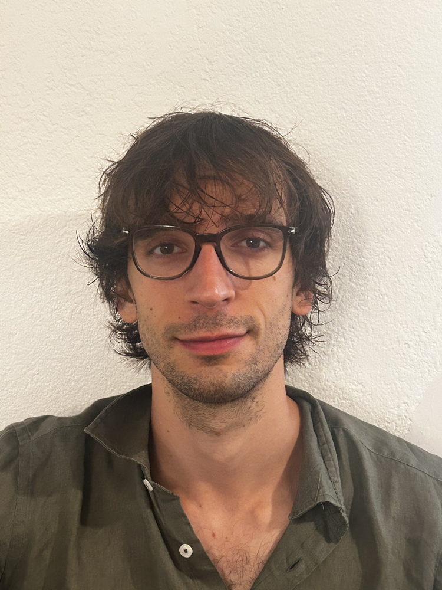
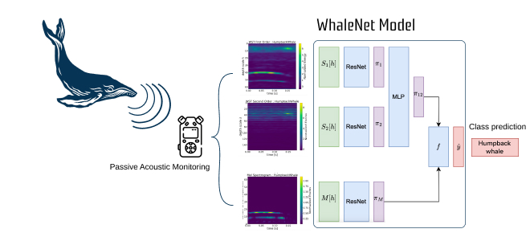
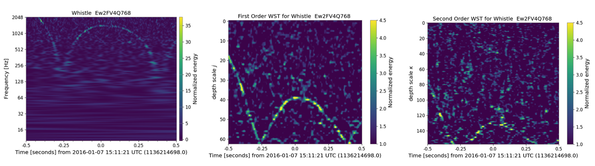
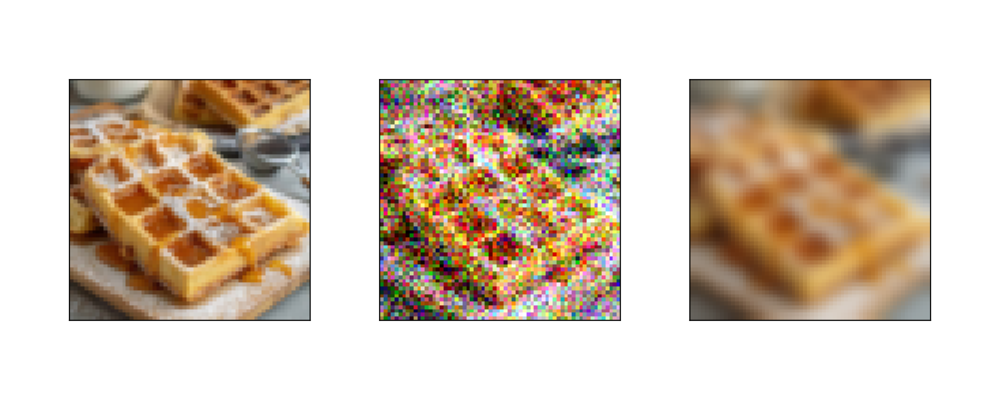
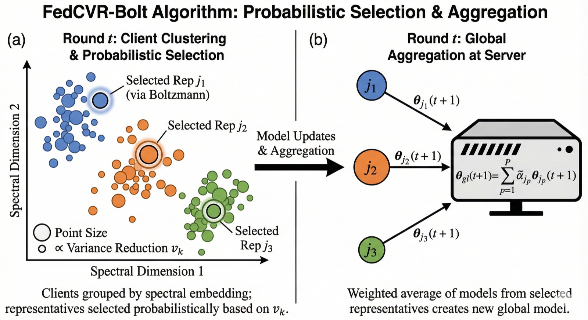
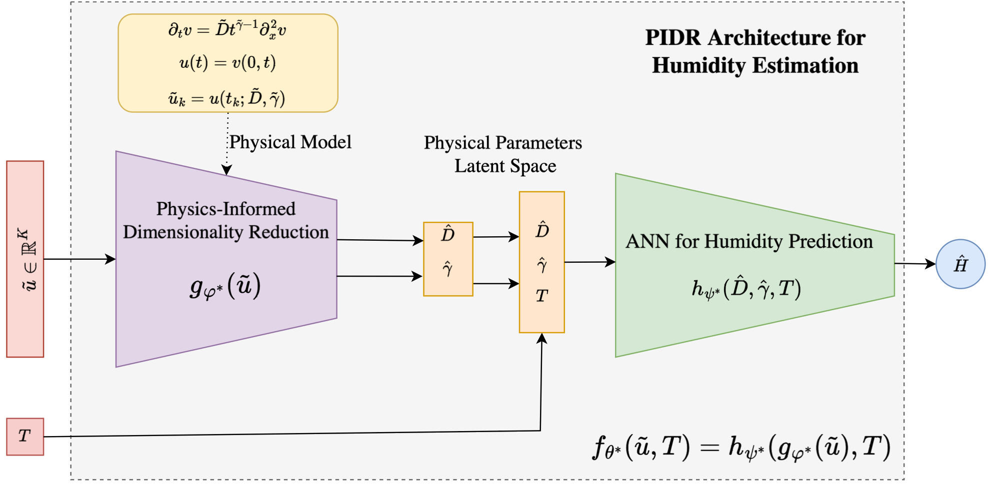

Alessandro Licciardi
PhD Candidate, Department of Mathematical Sciences, Politecnico di Torino
Advised by Lamberto Rondoni
About
I am a PhD candidate in Mathematical Sciences at Politecnico di Torino, in the Department of Mathematical Sciences (DISMA), supervised by Lamberto Rondoni, with expected completion in November 2026. My research sits at the interface of machine learning and the mathematical and physical sciences, held together by a preference for principled, probabilistic methods.
A central thread is federated learning: training models across many heterogeneous clients when their data cannot be shared. I develop methods that cluster clients by modelling their interactions through the statistics of their local losses, published at ICML 2025, and that detect malicious clients from compact spectral representations. This is where probabilistic and sampling-based ideas — variance-reduced Boltzmann sampling, interaction-aware weighting — do much of the work.
The same probabilistic outlook drives my interest in AI for science. As a Visiting Student Researcher in Grant Rotskoff's group at Stanford, I worked on rare event sampling and transition path sampling, using large deviation theory and stochastic dynamics to characterize transitions between metastable states. More broadly, I am drawn to generative and probabilistic modelling as tools for physical problems, and to the mathematical and physical-mathematics foundations of machine learning, including its statistical mechanics.
Running through much of my published work is the wavelet scattering transform, a structured preprocessing operator I have applied across three settings that do not usually appear together: marine mammal vocalizations, glitches in gravitational wave detector data, and anomaly detection in federated learning. The same operator does the work in each case, because it produces representations that are stable to deformation and invariant to translation, independently of the domain the signal comes from. Alongside this, through an industrial collaboration with Eltek S.p.A., I developed a physics-informed dimensionality reduction for estimating humidity from sensor time series.
Before the PhD I completed a Master's in Mathematical Engineering at Politecnico di Torino, 110/110 cum laude, with a thesis on the wavelet scattering transform applied to VIRGO gravitational wave data, following a Bachelor's in Mathematics for Engineering at the same institution. My PhD is supported by an industrial scholarship co-funded by the Italian Ministry of University and Research and Eltek S.p.A. I review for NeurIPS and ICLR, and referee for IEEE Journal of Oceanic Engineering and Ecological Informatics.
Research interests
- Federated Learning — heterogeneous and clustered settings, interaction modelling, robustness
- Probabilistic & sampling methods — variance-reduced Boltzmann sampling, large deviation theory
- AI in Science — rare-event and transition path sampling; ML for physics and bioacoustics
- Generative & probabilistic modelling
- Mathematical & physical-mathematics methods for AI — statistical mechanics of machine learning
- Wavelet scattering transform — structured preprocessing operators
Education
- M.Sc. in Mathematical Engineering, Politecnico di Torino, 2021–2023, 110/110 cum laude. Thesis: Wavelet Scattering Transform. Mathematical Analysis and Applications to VIRGO Gravitational Waves Data.
- B.Sc. in Mathematics for Engineering, Politecnico di Torino, 2018–2021, 110/110 cum laude.
Affiliations
- Visiting Student Researcher, Rotskoff Lab, Stanford University. Completed.
- Associated member, Istituto Nazionale di Alta Matematica (INdAM), Gruppo Nazionale di Fisica Matematica (GNFM).
- Associated member, Istituto Nazionale di Fisica Nucleare (INFN), Sezione di Torino.
- Member, Models and Methods of Mathematical Physics research group, DISMA (PI: Lamberto Rondoni).
Funding
- Industrial PhD Scholarship (MUR DM 117), co-funded by the Italian Ministry of University and Research and Eltek S.p.A., 2023–2026.
Outside research: music — electric and acoustic guitar, psychedelic rock, blues and jazz — and writing and poetry. A longstanding interest in marine mammals.
Research
The wavelet scattering transform is the common method running through Areas 1, 2 and 3: a single structured preprocessing operator applied, respectively, to marine mammal vocalizations, gravitational wave detector data, and signals in federated learning.
1 · Marine Mammal Bioacoustics
This line of work applies the wavelet scattering transform to marine mammal vocalizations. WhaleNet is a deep learning architecture for classifying marine mammal calls from the Watkins Marine Mammal Sound Database, combining wavelet scattering and spectrogram representations as input to the classifier.

- A. Licciardi, D. Carbone. WhaleNet: A Novel Deep Learning Architecture for Marine Mammals Vocalizations on the Watkins Marine Mammal Sound Database. IEEE Access, 12, 154182–154194, 2024. doi:10.1109/ACCESS.2024.3482117
2 · Gravitational Wave Data Analysis
Here the wavelet scattering transform is applied to gravitational wave detector data for the characterization of glitches — transient noise artefacts in the detector output. The study compares scattering representations of detector signals with a standard time–frequency view.

- A. Licciardi, D. Carbone, L. Rondoni, A. Nagar. Wavelet Scattering Transform for Gravitational Waves Analysis: An Application to Glitch Characterization. Physical Review D, 111(8), 084044, 2025. doi:10.1103/PhysRevD.111.084044
3 · Federated Learning
This work studies federated learning in heterogeneous and clustered settings. One published method clusters clients by modelling their interactions through the statistics of their local losses; another uses the wavelet scattering transform, together with a Fourier representation, for offline detection of malicious clients — again the same scattering operator that runs through Areas 1 and 2.


- A. Licciardi, D. Leo, E. Fanì, B. Caputo, M. Ciccone. Interaction-Aware Gaussian Weighting for Clustered Federated Learning. Proceedings of the 42nd International Conference on Machine Learning (ICML), PMLR 267:37642–37666, 2025.
- A. Licciardi, D. Leo, D. Carbone. Wavelet Scattering Transform and Fourier Representation for Offline Detection of Malicious Clients in Federated Learning. IEEE Internet of Things Journal, 2026. doi:10.1109/JIOT.2026.3671698
- Preprint A. Licciardi, R. Raineri, A. Proskurnikov, L. Rondoni, L. Zino. Tackling Heterogeneity in Federated Learning via Variance-Reduced Boltzmann Sampling within Homogeneous Social Coalitions. Preprint, 2026.
4 · Physics-Informed Machine Learning
Developed through an industrial collaboration with Eltek S.p.A., this work estimates humidity from sensor time series using a physics-informed dimensionality reduction. A physical model informs the reduction, from which physical parameters are recovered and passed to a network that predicts humidity.

- A. Licciardi, S. Bernardi, M. Pizzi, P. Begnamino, L. Rondoni. A Machine Learning Model for Humidity Estimation Based on Physics-Informed Dimensionality Reduction. Nonlinear Dynamics, 113(23), 31941–31963, 2025.
5 · Kinetic Opinion Dynamics on Networks
This work studies kinetic models of opinion formation on networks, using graphon limits to pass from large real-world networks to a continuum description, under selective media influence. It is currently a preprint under review.
- Preprint B. Düring, M. Fraia, A. Licciardi. From Graphons to Real-World Networks: Kinetic Opinion Dynamics under Selective Media Influence. Preprint, 2026. Under review at Mathematical Models and Methods in Applied Sciences (M3AS). arXiv:2607.02821
Publications
- A. Licciardi, D. Leo, E. Fanì, B. Caputo, M. Ciccone. Interaction-Aware Gaussian Weighting for Clustered Federated Learning. Proceedings of the 42nd International Conference on Machine Learning (ICML), PMLR 267:37642–37666, 2025.
- A. Licciardi, D. Leo, D. Carbone. Wavelet Scattering Transform and Fourier Representation for Offline Detection of Malicious Clients in Federated Learning. IEEE Internet of Things Journal, 2026. doi:10.1109/JIOT.2026.3671698
- A. Licciardi, S. Bernardi, M. Pizzi, P. Begnamino, L. Rondoni. A Machine Learning Model for Humidity Estimation Based on Physics-Informed Dimensionality Reduction. Nonlinear Dynamics, 113(23), 31941–31963, 2025.
- A. Licciardi, D. Carbone, L. Rondoni, A. Nagar. Wavelet Scattering Transform for Gravitational Waves Analysis: An Application to Glitch Characterization. Physical Review D, 111(8), 084044, 2025. doi:10.1103/PhysRevD.111.084044
- A. Licciardi, D. Carbone. WhaleNet: A Novel Deep Learning Architecture for Marine Mammals Vocalizations on the Watkins Marine Mammal Sound Database. IEEE Access, 12, 154182–154194, 2024. doi:10.1109/ACCESS.2024.3482117
Preprints
- A. Licciardi, R. Raineri, A. Proskurnikov, L. Rondoni, L. Zino. Tackling Heterogeneity in Federated Learning via Variance-Reduced Boltzmann Sampling within Homogeneous Social Coalitions. Preprint, 2026.
- B. Düring, M. Fraia, A. Licciardi. From Graphons to Real-World Networks: Kinetic Opinion Dynamics under Selective Media Influence. Preprint, 2026. Under review at Mathematical Models and Methods in Applied Sciences (M3AS). arXiv:2607.02821
Talks
- Invited talk Mathematical Advances in Federated Learning: Interaction Modeling and Clustering, Spectral Representations and Anomaly Detection. Seminars of the Department of Mathematics, Università di Bologna, 2 July 2026.
- Invited talk Principled, Communication-Light Federated Learning: Interaction Modeling and Offline Spectral Representations for Clustering and Robustness. Cambridge Machine Learning Systems Seminar (CaMLSys), University of Cambridge, 15 June 2026.
- Poster Tackling Heterogeneity in Federated Learning via Variance-Reduced Boltzmann Sampling within Homogeneous Social Coalitions. Italian Conference on Computational Social Science (CS2Italy), Torino, 19–21 May 2026.
- Poster Interaction-Aware Gaussian Weighting for Clustered Federated Learning. 42nd International Conference on Machine Learning (ICML), Vancouver, 13–19 July 2025.
- Contributed talk Applications of the Wavelet Scattering Transform in Machine Learning: from Gravitational Waves and Whale Vocalizations to Communication-Efficient Anomaly Detection in Federated Learning. ScatterBrains, Politecnico di Torino, 16 April 2025.
- Contributed talk Wavelet Scattering Operators for Machine Learning in Bioacoustics and Astrophysics. GNFM Summer School in Mathematical Physics, September 2024.
- Invited speaker Non-Linear Operators in AI: from Time-Series Analysis to Texture Discrimination. GIMC-SIMAI Young, Università degli Studi di Napoli Federico II, July 2024.
- Contributed talk Wavelet Scattering Operators for Multiscale Processes: The Case Study of Marine Mammal Vocalizations. 2nd International Conference on Nonlinear Dynamics and Applications (ICNDA), Sikkim Manipal University, February 2024.
Teaching
- Mathematical Analysis II (English and Italian courses). Teaching Assistant, Politecnico di Torino, 2025–present.
- Mathematical Analysis I (English course). Teaching Assistant, Politecnico di Torino, 2024–present.
Service
- Reviewer, Conference on Neural Information Processing Systems (NeurIPS), 2026.
- Reviewer, International Conference on Learning Representations (ICLR), 2026.
- Referee, IEEE Journal of Oceanic Engineering, 2025–present. Two manuscripts reviewed.
- Referee, Ecological Informatics (Elsevier), 2025–present. Six manuscripts reviewed.
Contact
- alessandro.licciardi@polito.it
- GitHub
- github.com/alelicciardi99
- linkedin.com/in/alessandro-licciardi
- ORCID
- 0009-0006-8428-3408